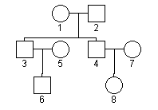
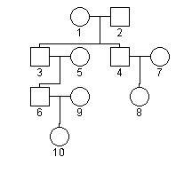
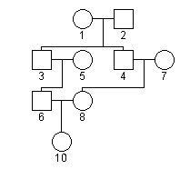

Introduction
The Pedigree Explorer allows the user to enter, edit, and solve human pedigrees
involving one gene.
Changes are made to the pedigree via a graphical display interface. The
resulting display can be saved as a pedigree file and as a graphical
image file.
Pedigree Explorer is based on Pelican:
Dudbridge F, Carver T, Williams GW. Pelican: Pedigree Editor for
Linkage Computer Analysis. Bioinformatics 20:2327-8
The initial window displays a female parent. This can be changed to a male using the popup menu (see below).
There are four main menu buttons: File, Edit, Options, View.
Open - reads in a pedigree file and displays the data in the graphical window ready for editing. Pedigrees must be saved in the custom .xml format saved by PedigreeExplorer.
Save - saves the data to a .ped xml file.
Print - prints the pedigree either to a file or printer. If "Print->file" is chosen, the pedigree will be saved as an image file in either PNG (default) or JPEG format. If this option cannot be selected, you need a more recent Java version. If "Print->printer" is chosen, the pedigree will be printed on a local PostScript printer. Many systems have an option within the printer driver to save the PostScript output to disk.
Exit - exits Pelican. This can also be achieved by pressing "q" on the keyboard.
Undo - undoes the previous editing change. Undo can also be performed by pressing "u" on the keyboard.
Redo - makes the editing change again (opposite of Undo). Redo can also be performed by pressing "r" on the keyboard.
Clear history - this make Pelican forget the history of changes so that Undo cannot undo the changes made prior to selecting this option.
Renumber - renumbers the subjects according the current layout, in top-down left-right order.
Auto layout - when selected, the pedigree will be automatically rearranged on screen each time a subject is moved with the mouse. When deselected, you can use the mouse to move individual subjects around, which can sometimes result in more elegant displays than the automatic arrangement. When new subjects are added to the pedigree, it is always automatically laid out again.
The layout algorithm is basically to take each orphan mating and plot all descendents in depth-first order. Undrawn spouses are added to the right. The trees for each orphan mating are added from left to right according to the input order.
Display IDs - when selected, the numeric ID of each subject is displayed beneath the symbol for that subject.
Display Names - when selected, the name of each subject is displayed beneath the symbol for that subject. The name can be changed using the pop-up menu; see below for details.
Show genotypes - allows you to display genotypes for the selected genetic model. These are only for convenience when working out a pedigree. They are not saved nor are they used when PedEx solves the pedigree.
This is for use when solving a pedigree yourself; it allows you to make notes of the possible genotyopes of the people in the pedigree as you work it out. Selecting a model from this list displays the genotypes of all the individuals for the model selected. It also shows a table of genotypes and phenotypes for this model.
Left-click on an individual to select it.
Right-click on an individual to show the menu of operations.
Change->affection - this changes the affection status to one of the options "Affected" or "Unaffected". This information is displayed as a filled-in symbol or a clear symbol, respectively.
Change->sex - this changes the sex of a subject. Males are displayed as squares and females as circles. Note that there is no checking for invalid matings (male-male) at this point, although these are checked for when opening a pedigree file from disk.
Change->genotypes - allows you to edit the genotypes for this subject. The genotype you set depends on the model selected; the genotype for each individual for each of the 4 possible models is saved while the program is open.
Merge with - This allows you to identify two people in the display as being the same individual. This allows you to create loops. Select the "Merge with..." menu option and then Left-click on the subject to merge with. You cannot merge two subjects of different sexes, two subjects who both have parents in the pedigree, or a subject with one of its own ancestors.
Delete - this allows you to delete an individual. Any individuals whose existence depends on the deleted individual will also be deleted. You will be warned of this and given a chance to cancel this action if you do not want this to happen. The dependent individuals deleted are usually the descendants and their spouses, sometimes one or both parents. It is possible to delete an individual that linked two related families, leaving two different, unrelated families. Saving this data may cause linkage programs to give errors or crash. It is up to you to edit the pedigree to delete the detached family or link the two familes together again.
The aesthetic quality of the graphical pedigree display is therefore dependent on the order in which the individuals are added to the display, or in which they occur in the input file.
In general you should start at the top-left-most generation and work across to the right to fill in as much of the earlier generations as possible before filling in the later generations. This produces a better layout.
The layout can be changed by dragging individuals around the display. Two operations are allowed: changing the left-right order of full siblings in a sibship, and changing the left-right order of the "root" subjects (ie. orphans whose spouses are also orphans). To move a subject, left-click on it and move the mouse around while keeping the button depressed. This can also help in viewing complex pedigrees with multiple line crossings.
Note that the pedigree data file can hold individuals in any order - this does not affect the linkage programs, so the order in which individuals are added or laid out does not affect the way these programs will analyse the data, it will only affect the way that Pelican graphically displays the data.

Add a dummy spouse and daughter for individual 6:

then Right-click on individual 9 and select "Merge with..." then click on individual 8:

The dummy individual is akin to a loop-breaker in linkage analysis.